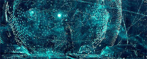

La tecnología
La tecnología en la actualidad La tecnología ha avanzado notablemente desde los primigenios fuego y rueda. En la actualidad, la palabra tecnología hace referencia al empleo del conocimiento científico a través de aplicaciones, gadgets o dispositivos, herramientas y técnicas para el diseño y creación de bienes o servicios que facilitan la adaptación al medio y dan respuesta a las necesidades individuales y colectivas, y mejoran notablemente la vida de las personas. Como adelantábamos, podemos decir que ahora mismo nos encontramos en una era tecnológica de transformación digital de la sociedad, una etapa histórica, disruptiva, dominada por la producción de bienes y servicios y su comercialización, en la que el factor energía tiene un papel crucial. “Toda la actividad científico-técnica permanece en continuo movimiento y se fundamenta sobre el bienestar humano y su progreso social y económico.” Al igual que la rueda hizo en Mesopotamia, la tecnología actual está ganando un espacio en nuestras vidas, exigiéndonos adaptación a cambio de otros beneficios y facilidades como el ahorro en tiempo y esfuerzo que mejoran nuestro día a día. De este modo, las tecnologías aplicadas a la información y a la comunicación, las TICs cubren cualquier producto que almacene, recupere, manipule, trasmita o reciba información electrónicamente en forma digital. Gracias a ellas podemos desde controlar las pulsaciones a través de un reloj inteligente, solicitar cita al centro de salud, hasta consultar los eventos y noticias a tiempo real o comunicarnos por voz e imagen instantáneamente, salvando enormes distancias geográficas y zonas horarias diferentes. Estos ejemplos, aunque puedan considerarse pequeños actos de nuestra vida habitual, nos llevan inexorablemente hacia un nuevo modelo de sociedad TECnológica que se encuentra inmersa en los cambios revolucionarios que supone el uso de la tecnología en áreas como son la sanidad, el trasporte, las comunicaciones y ocio.
Ver video de la importancia tecnológia